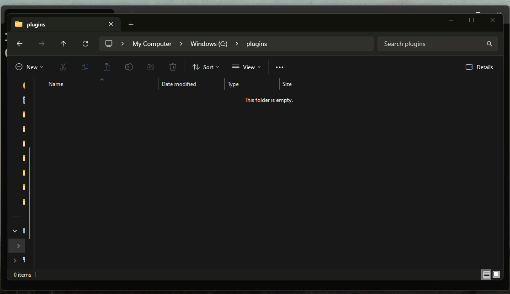
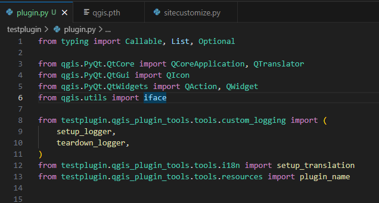
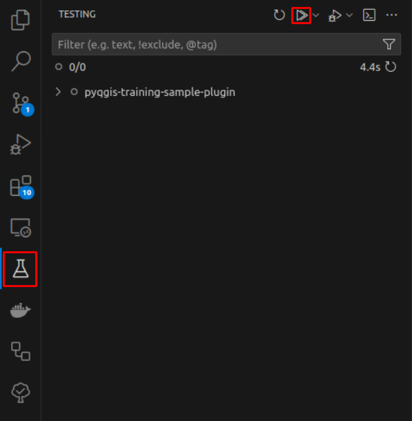

Harjoitus 5: Uuden lisäosan luominen
Harjoituksen sisältö: Lisäosien luominen käyttäen Cookiecutteria
Harjoituksen tavoite: Kurssilainen osaa luoda omia lisäosiaan
Lisäosapohja luodaan komentorivityökaluilla. Käytetään komentorivinä QGIS-asennukseen kuuluvaa OSGeo4W Shelliä. Avaa se esimerkiksi hakupalkista kirjoittamalla OSGeo4W.

Gitin konfigurointi
Ennen lisäosan luomista konfiguroidaan git-versionhallintatyökalu toimimaan oikein.
- Ensin OSGeo4W shellissä polku git.exe:en täytyy lisätä ensin Path-ympäristömuuttujaan:
set Path=%Path%;"C:\Program Files\Git\cmd"- Aseta gitille käyttäjänimesi ja sähköpostiosoitteesi
git config --global user.name käyttäjänimesi-gitissägit config --global user.email sähköpostiosoitteesi- Aseta gitin submoduulien (kuten qgis_plugin_tools) päivittäminen tapahtumaan
git pull:n yhteydessä
git config --global submodule.recurse true- Seuraavaksi pakota git asettamaan tiedostojen rivinvaihdot Unix-yhteensopiviksi
git config --global core.autocrlf inputLisäosan luominen
Luo ensin sopivaan sijaintiin kansio lisäosalle ja navigoi kansioon OSGeo4W Shellissä:

- Luo oma virtuaaliympäristö cookiecutter-pluginille
%PYTHONHOME%/python.exe -m venv cookiecutter-venv%PYTHONHOME%-ympäristömuuttuja OSGeo4W-shellissä viittaa QGIS-asennukseen kuuluvaan Python-tulkkiin.
- Aktivoi luomasi virtuaaliympäristö cookiecutter-venv
.\cookiecutter-venv\Scripts\activate- Asenna virtuaaliympäristöön kirjastot
cookiecutterjapip-tools
python -m pip install -U pip
pip install cookiecutter pip-tools- Luo uusi template:
cookiecutter https://github.com/GispoCoding/cookiecutter-qgis-plugin.git- Voit käyttää oletusasetuksia paitsi kohdissa:
Select a name for your plugin: Test PluginInclude processing algorithm in your plugin?: y
- Deaktivoi cookiecutteria varten luotu virtuaaliympäristö ja siirry cookiecutterin luomaan lisäosakansioon:
deactivate
cd test-plugin- Aja kansiossa oleva valmis Python-skripti, joka luo lisäosakehitykselle sopivan virtuaalisen ympäristön:
python create_qgis_venv.pyJos tietokoneellasi on monta QGIS- asennusta, skripti saattaa kysyä mitä niistä halutaan käyttää kehityksessä. Valitse niistä parhaiten sopiva, mielellään uusin LTR- versio.
- Aktivoi uusi virtuaaliympäristö:
.venv\Scripts\activate- Asenna virtuaaliympäristöön pip:
python -m pip install -U pip- Asenna pip-tools:
pip install pip-tools- Käännä pip-compile-työkalulla tekstitiedostoon listaus tarvituista Python-paketeista:
pip-compile requirements-dev.in- Äskeisessä vaiheessa työkalu kirjoitti
requirements-dev.txt-tiedostoon listan asennettavista Python-paketeista. Asenna ne seuraavaksi:
pip install -r requirements-dev.txtKomennon jälkeen on hyvä tarkistaa, että asennukset ovat onnistuneet komennolla
pip freeze. Pakettien joukossa pitäisi olla mm.pytestjapytest-qgis.Tässä vaiheessa päästään viimein avaamaan Visual Studio Code. Avaa kansiosta
test-plugin.code-workspace-tiedosto. Sen pitäisi avautua automaattisesti VS Codessa.Ensin asetetaan VS Code käyttämään äsken luotua
.venv-ympäristöä. Valitaan Help-valikosta Show All Commands ja kirjoitetaan hakuunPython: Select Interpreter.

- Kun poistut VS Codesta, avaat sen uudelleen ja avaat
test-plugin-kansion, kehitysympäristön pitäisi olla täysin kunnossa. Voit todeta tämän avaamallatestplugin-kansion alta tiedostonplugin.py. Tiedoston yläosan importeissa ei pitäisi näkyä virheistä kertovia korostuksia.

- Projekti sisältää myös yhden testin, jonka avulla on hyvä tutustua VS Coden Testing-laajennukseen. Vasemman palkin symbolista avautuu paneeli, jonka kahden kolmion symbolilla pääsee ajamaan kaikki määritellyt testit.

Kehitysympäristö on nyt konfiguroitu ja valmiina käyttöä varten. Hienoa!
Ensimmäinen commit
Nyt on aika tehdä ensimmäinen commit, eli git commit. Avaa uusi komentorivi
VS Coden sisällä klikkaamalla Terminal->New Terminal.
Tarkastele komentorivin sisältöä. Se avautuu oletuksena PowerShellinä, mutta myös perinteinen komentorivi kelpaa hyvin. VS Code yrittää automaattisesti aktivoida virtuaaliympäristön. PowerShellillä tämä ei välttämättä onnistu ja voit saada virheilmoituksen:
Activate.ps1 cannot be loaded because running scripts is disabled on this system, aja seuraava koodinpätkä ja avaa tämän jälkeen uusi terminaali-ikkuna:Set-ExecutionPolicy RemoteSigned -Scope CurrentUser.
Sitten tehdään ensimmäinen commit
- Lisää kaikki tiedostot lisättäväksi committiin kirjoittamalla:
git add -A- Tarkastele
git status-komennolla mitä kaikkea on nyt lisätty lisättäväksi. - Kokeile nyt tehdä ensimmäinen commit komennolla:
git commit -m "Initial commit"Onneksi olkoon, olet nyt onnistuneesti luonut ensimmäisen commitin lisäosaan!
Lisäosan käyttöönotto
Ensimmäistä lisäosaa on hyvä kokeilla. Avataan siis QGIS ja testataan lisäosaa.
- Avaa QGIS ja luo sille uusi profiili
training - Muokkaa VS Codella
testplugin/build.py-tiedostoa ja muuta:profile = "training" - Navigoi komentorivillä kansioon
testpluginja lataa lisäosa käyttöön käyttäenbuild.py deploy-komentoa.
cd testplugin
python build.py deploy- Käynnistä nyt QGIS uudelleen ja varmistu, että se on profiilissa training
- Avaa Lisäosien hallintatyökalu ja valitse paneelista Asennettu Test Plugin
- Asenna samalla myös paneelista Kaikki lisäosa Plugin Reloader. Tarvitsemme sitä aina, kun haluamme ottaa uudet muutokset käyttöön käynnistämättä QGISiä uudelleen.
- Testaa nyt lisäosan toiminnallisuutta. Avaa ensin QGISin Python-konsoli ja käynnistä sitten lisäosa Lisäosat -> TestPlugin -> Test Plugin. Huomaat, että konsoliin ilmestyy tekstiä…
Lisäosan rakenne
Tutustutaan seuraavaksi lisäosan rakenteeseen. Alla on hieman yksinkertaistettu kaavio tärkeimmistä tiedostoista.
📦test-plugin
┣ 📂.git
┣ 📂testplugin
| ┣ 📂qgis_plugin_tools
| ┣ 📂resources
┃ ┣ 📜metadata.txt
┃ ┣ 📜plugin.py
┃ ┗ 📜__init__.py
┣ 📂tests
┃ ┣ 📜test_plugin.py
┣ 📜.gitignore
┣ 📜LICENSE
┣ 📜README.md
┣ 📜requirements-dev.txt
┗ 📜pyproject.tomlTiedosto: plugin.py
Tutustu ensin tiedostoon testplugin/plugin.py ja sen sisällä olevaan luokkaan
Plugin. Siinä pitäisi olla ainakin seuraavat metodit:
__init__: luokan konstruktori, sitä kutsutaantestplugin/__init__.py-tiedostosta.initGui: lisää lisäosan QGISin GUIhin, eli graafiseen käyttöliittymäänunload: poistaa lisäosan QGISin GUIstarun: koodi, jota suoritetaan, kun käyttäjä käynnistää lisäosan
Metodin run nimeä voi muuttaa, mutta muiden nimet pitää olla täsmälleen samat,
sillä QGIS kutsuu niitä sisäisesti.
Tiedosto: __init__.py
Tämä tiedosto sisältää tärkeän metodin classFactory. QGIS alustaa lisäosan kutsumalla tätä metodia. Se taas puolestaan palauttaa QGISille koko lisäosan yllä mainitun Plugin-luokan.
def classFactory(iface: QgisInterface):
from testplugin.plugin import Plugin
return Plugin()